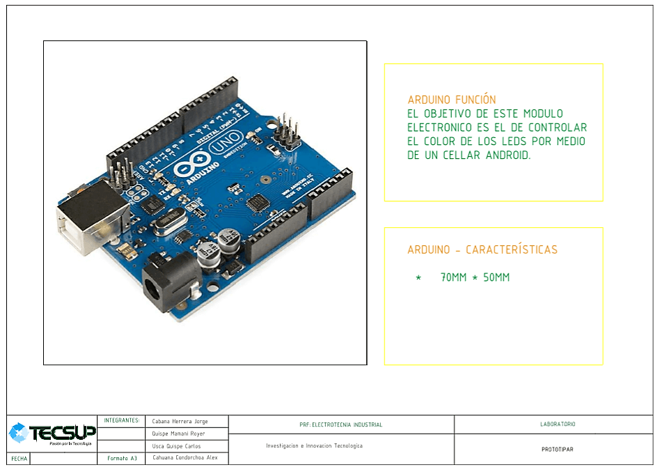

Prototipar y Testear
El propósito de esta fase es convertir la idea o solución a la que has llegado en un prototipo digital o físico. No necesariamente debe ser un objeto, sino también un dibujo o incluso un guión gráfico.
En esta fase se diseño en el programa AutoCAD las dimensiones de las lámparas y cada una de sus partes.



Documento-Forma de la Lámpara Artiplayer.
En estos documento usted podrá visualizar la forma que tendran nuestras lámparas usando el programa autoCAD para definir medidas
Documentos-Partes de las Lámparas.
Presentamos aqui documentos de como se muestra a detalle las medidas de cada una de las partes de la lámpara.
Documento - Fabricación Digital Documento - Fabricación Digital Documento - Fabricación Digital Documento - Fabricación Digital Documento - Fabricación Digital Documento - Fabricación Digital Documento - Fabricación Digital Documento - Fabricación Digital Documento - Fabricación DigitalPrimera Etapa: Precio del producto
A)Causa :
•Nuestro cliente al igual una gran comunidad de videojuegos no puede tener adquisiciones físicas de sus juegos virtuales favoritos en este caso “Dota 2”.
B)Criterios:
•En nuestro medio no hay mucho conocimiento y manejo sobre los aparatos electrónicos como las tarjetas, microcontroladores o herramientas como las maquinas laser para poder realizar la materialización de objetos virtuales.
•Nuestro cliente solo llego a encontrar cosas pequeñas sobre su juego favorito como: un polo estampado, pulseras, etc.
•Nuestro usuario al igual que una gran cantidad de gamers (jugadores), prefieren objetos decorativos que puedan utilizarlo en su vida cotidiana.
C)Solución:
•Nuestro proyecto Artiplayer se enfoca en esta comunidad de jugadores, asiéndose presente mediante lámparas con ilustración de Dota 2.
D)Costo del proyecto:
Imagen
Segunda Etapa:aumentado un 25%
A)Causa:
•Nuestro Usuario desea que la lámpara Artiplayer no ocupe gran cantidad de espacio y que pueda ser fácil de acoplar al mueble donde se encuentra la computadora.
•Desea luces de colores que no dañen la visión.
B)Solución:
•La dimensión de nuestra lámpara se redujo a un espacio aceptable.
•Se implementó focos led de luz fría que no consuman mucha energía al color adecuado, con una intensidad aceptable para la visión.
C)Costo del Proyecto:
•Finalizado..
Imagen
Tercera Etapa:aumentado un 100%
A)Causa:
•La modalidad del juego en que se pone énfasis este proyecto es de 5 personas, todo un equipo. Este juego Dota 2 consiste en estrategia en equipo, por lo cual nuestro cliente quiere poseer 5 lámparas para todo el miembro del equipo.
B)Solución:
•Solo se necita realizar una mayor sacar más copias de las lámparas de Artiplayer con los diversos logos de equipos profesionales conocidos, todos con el mismo tipo de función, poder satisfacer las necesidades del Usuario.
D)Costo del proyecto:
Imagen